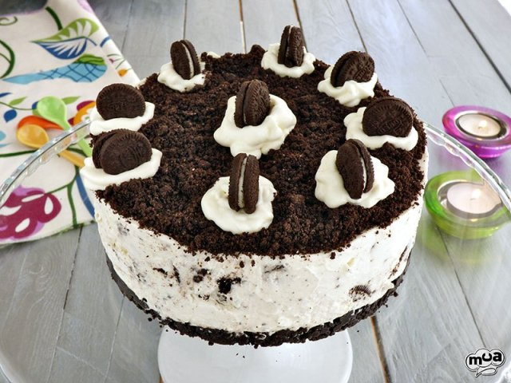

Torta Oreo

Esta tarta de Oreo es de esas recetas que guardas cuando las pruebas porque es perfecta como tarta de cumpleaños o para cualquier tipo de celebración familiar.
Ingredientes
- Galletas Oreo 240g + 170g
- Mantequilla 80g
- Nata líquida o crema de leche 400g
- Azúcar 180g
- Queso crema 500g
- Esencia de vainilla 2 cucharaditas
¿Como hacer una torta oreo?
Pasos para hacer la base
- Cogemos los 240g de galletas Oreo y los metemos en una bolsa tipo zip, y machacamos bien. Las pasamos a un cuenco donde las mezclaremos con la mantequilla derretida (podéis hacerlo en el microondas en pocos segundos).
- Mezclamos bien con las galletas y pasamos a un molde desmontable de unos 20 cm (si es más pequeño también vale, la tarta será más alta), donde aplastaremos bien con el canto de una cuchara hasta cubrir todo el fondo.
- Llevamos al frigorífico durante 20 minutos aproximadamente.
La torta oreo
- Para hacer nuestra tarta Oreo, primero mezclamos 400g de nata con 180g de azúcar y 500g de queso crema tipo philadelphia (vale cualquier marca).
- Lo ponemos todo en un bol junto a 2 cucharaditas de esencia de vainilla y batimos durante 2 minutos con el accesorio de varillas.
- Metemos de nuevo 170g de galletas Oreo en una bolsa y machacamos pero esta vez dejando trozos más gruesos que nos encontraremos en la tarta y le darán un punto inigualable de sabor.
- Mezclamos con el resto de ingredientes que habíamos batido y revolvemos bien hasta que se integren.
- Volcamos al molde que habremos sacado del frigorífico, sobre la base de galletas oreo.
- Extendemos bien con una espátula y llevamos a la nevera 20 minutos.